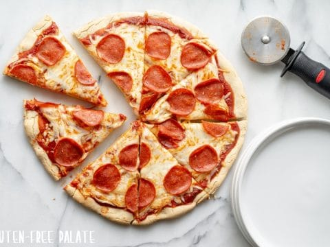

Pizza

Description
Pizza is a classic meal, and there is really no wrong way to make it. Some like the crust thick and deep, others like it thin and foldable. You can make it as cheesy or as meaty as you like.
Ingredients:
- Pizza Crust
- Cheese (any kind works, but for the classic pizza-ey style use mozzarella with low hydration)
- Pizza sauce of your preference (you can also use spaghetti sauce if you like a sauce that isn't as sweet)
- Toppings (I like classic pepperoni and sausage)
- Pizza Stone (not required, but otherwise your crust wont get that nice crispyness you are used to)
Recipe:
- Put the pizza stone in the oven and light that sucker up.
- While the stone is heating up, prepare your crust.
- Lay out crust on a pizza-pan of your choice, you can use rectangular pizzas and they taste just as good as circular ones (no judgement).
- Spread sauce to desired saucyness.
- Add cheese and toppings depending on if you prefer toppings under or on top of cheese.
- Bake in oven until cheese is melted.